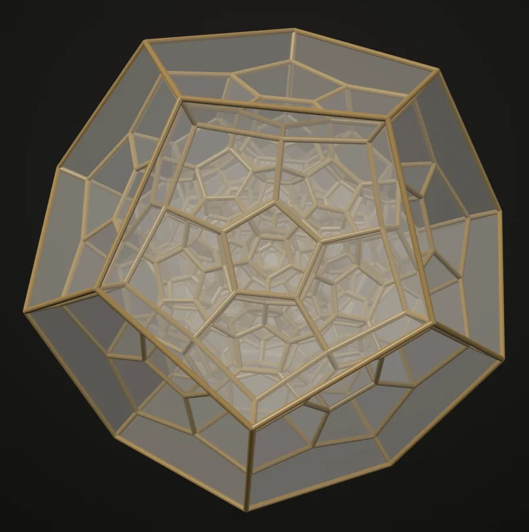
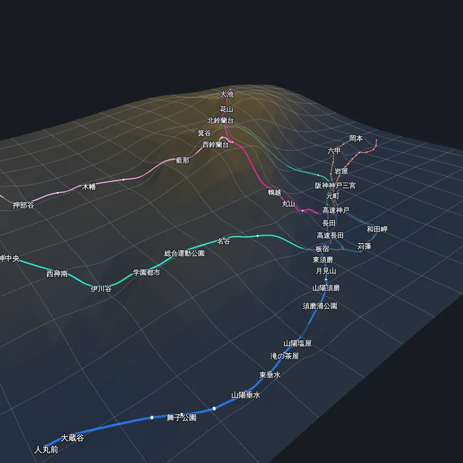
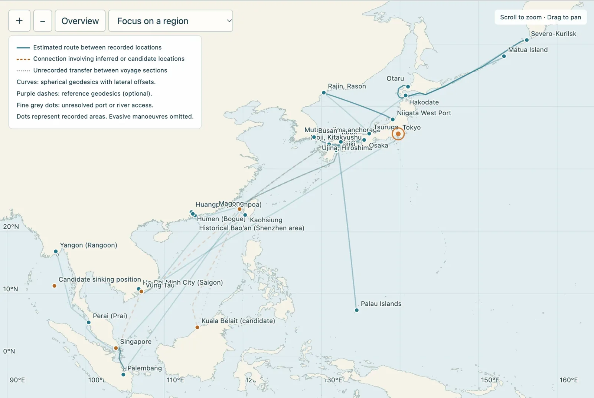

Miyamoto
宮本
Paper. Cut. Fold. Transform.
紙を、切り、折り、変容させる。
宮本
Paper. Cut. Fold. Transform.
紙を、切り、折り、変容させる。
RES is a paper art form conceived by Miyamoto — creating sculpture from a single uncut sheet through mathematical precision and organic beauty. Each work transforms flat paper into three-dimensional form through cuts and folds alone.
RESは宮本が創案した切り折り紙のアートフォーム。 一枚の紙から、数学的精度と有機的な美によって立体を生み出す。 切りと折りだけで、平面が三次元の造形へと変容する。



Studio Hyperfolder Between the Dimensions ハイパーフォールダー — 次元のあいだを旅する 三次元の多面体と四次元のポリトープを眺め、展開し、紙でふたたび折り上げる。 Explore 3D polyhedra and 4D polytopes, unfold them, and fold them again in paper. 旅をはじめる デモを見る 代表例を約1分半で自動再生しますIn Flatland, a Square was led by a Sphere into the third dimension.
Here, you travel on — to the fourth, and back again to a single sheet of paper.『フラットランド』の正方形は、球に導かれて三次元を知った。
ここでは、その先の四次元へ。そして再び、一枚の紙へ。
 Viewer
QUASICRYSTAL
三次元準結晶ビューア
2種類の黄金菱面体が織りなす三次元準結晶を、回転・分解・断面で観察する。
A 3D quasicrystal of two golden rhombohedra — rotate, explode and slice it.
ビューアを見る
Viewer
QUASICRYSTAL
三次元準結晶ビューア
2種類の黄金菱面体が織りなす三次元準結晶を、回転・分解・断面で観察する。
A 3D quasicrystal of two golden rhombohedra — rotate, explode and slice it.
ビューアを見る

Atlas World Transit Sections Cities, in Section 世界都市交通断面 世界の都市鉄道を、地形と深さで立体的に見せる。運転席の視点で、路線の起伏をたどる。 Urban rail networks in 3D, through terrain and depth — ride each line’s profile from the driver’s seat. 都市をえらぶ ロンドン・リヨン・ウィーン・キーウ・重慶 西安・香港・南京・神戸・名古屋Voyage
Tracing the Voyages of Dover Maru

私の祖父、宮本音次郎（Otojirou Miyamoto）は「どうばあ丸」の船員でした。
どうばあ丸（Dover Maru）は、太平洋戦争中に陸軍の徴傭輸送船として行動した商船です。1943年10月26日、ラングーン沖（ビルマ／現ミャンマー）で空爆により戦没しました。
公開した航路ページでは、1941〜1943年の航海記録を地図とタイムラインでたどることができます。寄港地の現代名や英語表示にも対応しています。史料に残る記録と、空白期間・航路形状の推定を区別しながら、祖父が乗り組んだ船の歩みを紹介しています。
My grandfather, Otojirou Miyamoto, was a crew member of Dover Maru.
Dover Maru was a merchant ship that operated as an Army-requisitioned transport during the Pacific War. She was lost to an air attack off Rangoon (Burma, now Myanmar) on 26 October 1943.
The voyage page traces her recorded voyages of 1941–1943 on a map and a timeline, with modern and English names for her ports of call. It keeps what the historical records show apart from what is estimated — gaps in the record and the shape of each route — as it follows the ship my grandfather served on.
以下は戦時の船員・船舶全体の数字です。Figures below are for all wartime seafarers and vessels.
The Seafarers Who Sustained Wartime Sea Transport
1941–1943年の記録を地図で表示／日本語・英語対応／推定を含みます
Records of 1941–1943 on a map / Japanese & English / includes estimates
出典 Sources
ウェブページ確認日：2026年10月25日（各数値の集計時点は本文に記載）
Pages accessed 25 October 2026; the reference date of each figure is given in the text.
Now in Preview
試運転中 — 内容は順次ととのえていきます